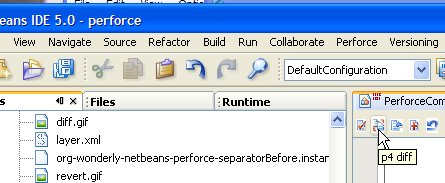
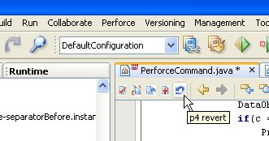
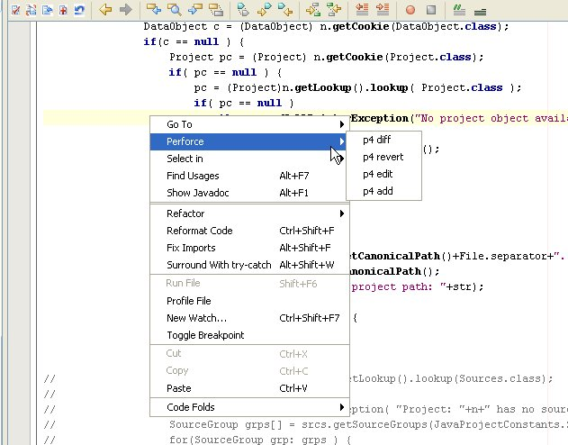

Checkout Action in Editor
The Checkout action shown in the editor toolbar below will allow you to quickly check out a file for edit.
Diff Action in Editor
The diff action in the editor toolbar provides access to the graphical diff displayed through the p4merge tool.
The p4merge tool shows graphical diffs as depicted below.

Submit Action in Editor
The submit action submits the single file corresponding to the file currently being edited.
Add Action in Editor
The add action will add the currently edited file to perforce.
Revert Action in Editor
The revert action prompts the user for confirmation of the revert, and provides the ability to view the edits that have occured via the p4merge based differences viewed as shown above.
Global Perforce Menu Bar Menu
The global Perforce menu provides access to the perforce operations on all other file types that can be shown in the editor.
File Context Perforce Menu
The popup, editor context menu also includes a perforce menu to show the perforce operations there as well.
This is a simple module without a lot of flare, and it certainly won't be helpful in renaming and other refactoring operations at this time. But, hopefully it will be extended over time to be more fully integrated with netbeans.